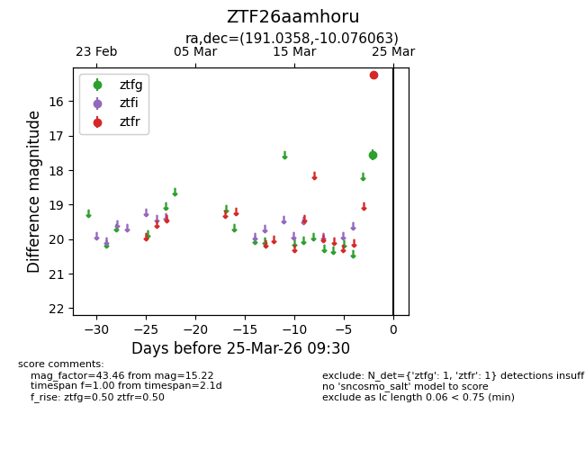
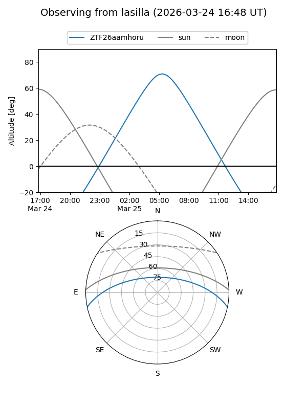
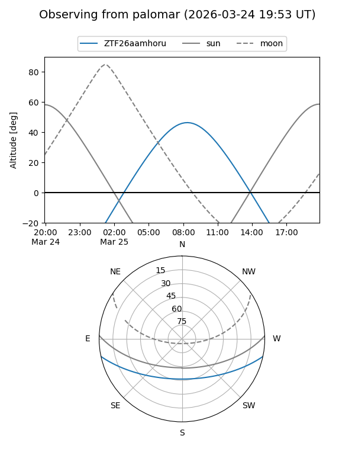

ZTF26aamhoru
Target ZTF26aamhoru at 2026-03-25 09:33
Aliases and brokers:
FINK: link
Lasair: link
ALeRCE: link
alt names
ZTF26aamhoru (ztf,fink_ztf)
Coordinates:
equatorial (ra, dec) = 191.0358,-10.07606
equatorial (HMS+DMS) = 12:44:08.60,-10:04:33.83
galactic (l, b) = (299.9645,+52.75365)
Flags:
Photometry:
last ztfg=17.55, ztfr=15.22
1 ztfg, 1 ztfr detections
Lightcurve

Visibility


Additional plots